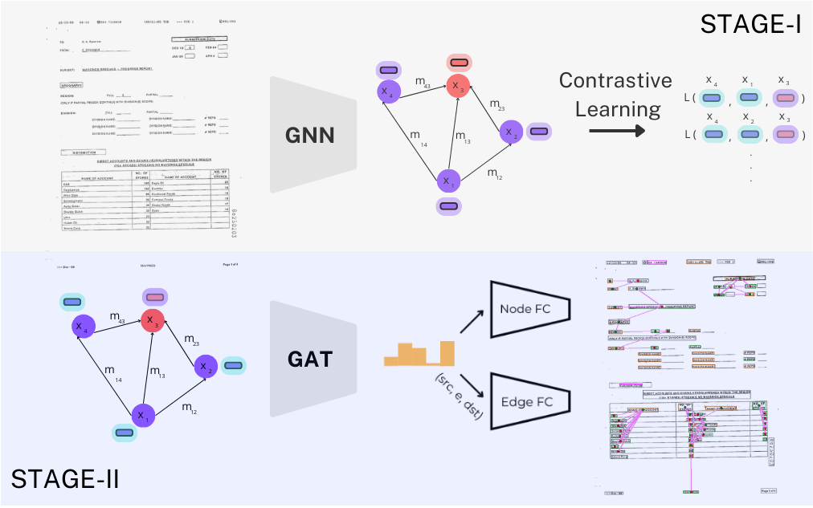

|
Nil Biescas I'm a 4th year Artificial Intelligence Student at Universitat Autonoma de Barcelona (UAB) in Barcelona. I'm currently doing my last semester at TUM in munich, doing my bachelor thesis under the supervision of Deniel Cremers , Felix Wimbauwer and Dominik Muhle. At CVC I've worked on Document Understanding using graph neural networks. |
{kind=link}
ResearchI'm interested in computer vision, deep learning, generative AI, and image processing. Most of my research is about inferring the physical world (shape, motion, color, light, etc) from images, usually with radiance fields. Some papers are highlighted. |

|
LayeredDoc: Domain Adaptive Document Restoration with a Layer Separation Approach
Nil Biescas, Maria Pilligua, Javier Vazquez-Corral, Josep Lladós, Ernest Valveny, Sanket Biswas ECCV WiCV, ICDAR, 2024 project page / arXiv Documents can be seen as a composition of semantic layers, and decomposing these layers helps on Domain Adaptation for Document Restoration. |
|

|
GeoContrastNet: Contrastive Key-Value Edge Learning for Language-Agnostic Document Understanding
Nil Biescas, Josep Lladós, Sanket Biswas ICDAR, 2025 project page / arXiv A method for structured document understanding without relying on language or OCR. By combining geometric edge features and visual features in a two-stage graph attention framework, this model achieves strong performance on link prediction and entity recognition. It captures spatial relations between text elements, learning key-value pairs in forms and table layouts in invoices. |

|
Document Digitallization
Nil Biescas, Maria Pilligua, Xavi Soto, Jordi Longaron, Laia Vilardell, Class Project, 2024 project page Our work focuses on converting complex physical documents into an editable digital format. The figure below outlines our pipeline, which separates textual and graphical elements before processing them. |
|
Feel free to steal this website's source code. Do not scrape the HTML from this page itself, as it includes analytics tags that you do not want on your own website — use the github code instead. Also, consider using Leonid Keselman's Jekyll fork of this page. |